Help side panel, which shows most of actions, available in current mode.
Maps can now be loaded by dragging wad files on top of GZDB's main window.
Open Map Options, Map Options and Game Configurations forms: resources can be added by dragging them on top of resources list.
Game Configurations form: game configurations can be disabled. This setting is mostly cosmetic. When a game configuration is disabled, it won't be shown in the "game configuration" drop downs in New\Open Map Options and Map Options windows. If a map's .dbs file specifies a disabled configuration, it will be picked as a map configuration anyway.
Game Configurations form: game configurations can be copied and pasted (a context menu is now available in the game configurations list).
Numeric textboxes: in addition to '++NN' and '--NN' to increment or decrement by given value, you can use '*NN' and '/NN' to multiply or divide by given value, '+++N' and '---N' to incrementally increase or decrease by given value.
Toolbar button groups can be toggled using context menu. Hold "Shift" to toggle several button groups at once.
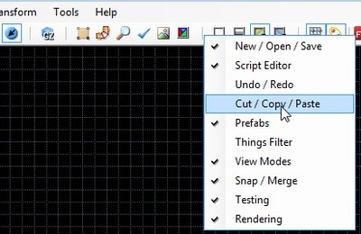
You can save screenshots using Tools -> Save Screenshot (default key is F12) and Tools -> Save Screenshot (editing area) (default key is Ctrl-F12) menu commands.
You can save shortcut reference to html file using Help -> Export Shortcut Reference menu command.
New action: "Open Map in current WAD", available as File -> Open Map in current WAD and via Ctrl-Shift-O shortcut.
New action: "Export to Wavefront .obj", available as File -> Export -> Selection to Wavefront .obj. It will export selected sectors (or the whole map, if no sectors are selected) to Wavefront .obj model.
New action: "Reload MODELDEF/VOXELDEF" (Tools -> Reload MODELDEF/VOXELDEF).
New action: "Reload GLDEFS" (Tools -> Reload GLDEFS).
Info about current selection is shown at the bottom of program's window.
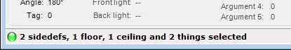
Texture size is now shown in texture previews. You can disable this feature by unchecking "Preferences -> Interface -> Show texture and flat sizes in browsers" checkbox.
Map can be tested from camera position in Visual mode and from cursor position in Classic modes. More info.
Selection can be synchronized between Classic and Visual modes. More info.
Camera position can be synchronized between Classic and Visual modes. More info.
You can use Color Picker plugin to edit dynamic light properties and sector's fog and tint colors in Classic and Visual modes.
You can use Tag Explorer plugin to view all tags and actions used in current map.
You can paste only specific properties using "Paste Properties Special" action (available via keyboard shortcut, as "Edit -> Paste Properties Special..." menu item and as a button on the Edit Mode toolbar).
Image browser shows directory structure of Folder, PK3 and PK7 resources and can filter images by texture type and size. More info.
Most controls of Edit Sector/Linedef/Thing forms now work in realtime (e.g. you can immediately see texture offset/scale/rotation changes while you are changing appropriate values). Action and Tag changes are still applied only after you press "OK" button.
[UDMF] All UDMF properties (except "comment") can be edited using Edit Sector/Linedef/Thing/Vertex forms user interface.
Thing Edit Form has "Random angle" checkbox.
[UDMF] Sector, Linedef and Vertex info panels show additional info if a map is in UDMF format.
Classic modes:
All drawing modes are available in the Mode menu
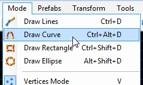
Thing sprites are rendered in classic modes.
You can assign custom color to any combination of linedef flags, actions and/or activation. More info.
Selected things are now dragged while dragging vertices, linedefs and sectors.
You can hold the Alt key while dragging map elements to snap them to grid increments relative to their initial position.
You can place things on top of selected vertices in Vertices and Linedefs modes and inside of selected sectors in Sectors mode using "Place Things" action.
You can view all loaded thing types and some additional info using Thing Statistics form (Edit -> View Thing Types...).
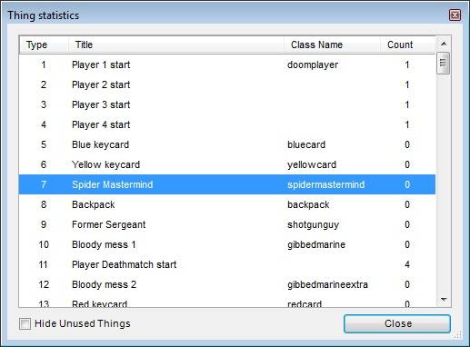
You can override default sector properties, which are used to create new geometry, using "Draw Settings" panel (by default, when the new sector overlaps or touches existing sector, the editor uses textures, brighntess and floor/ceiling heights from that sector when drawing the new one).
You can disable Doom Builder's auto-clear textures behaviour by using this button in the toolbar: 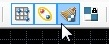
You can change default sector brightness and floor/ceiling height (Preferences -> Editing -> Default sector settings). These settings are used when the new sector doesn't touch or overlap already existing sectors.
3D floor indication (color can be changed in Preferences -> Appearance -> 3D Floors, the setting can be disabled in Preferences).
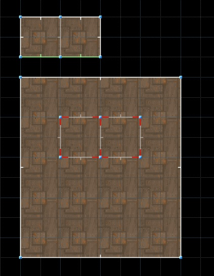
Line angle, length and front side direction are displayed when a line is drawn in Draw Geometry mode or dragged in any Classic mode.
[UDMF] Floor/ceiling texture offsets can be pinned using this button in the toolbar: 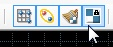. When pinned, textures will be aligned to a sector while it is dragged.
Tag Range plugin: custom increment can now be set.
Tag Range plugin: tags can be set in relative mode (when this mode is enabled, generated values are added to existing tags instead of replacing them).
You can clear selection groups (default shortcuts are Ctrl-Shift-1 ... 0).
You can add selection to groups, select and clear groups using the Edit menu.
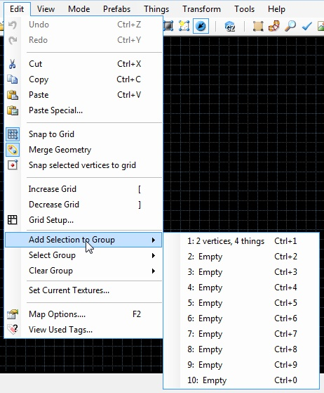
Center of map is shown in Classic modes using Highlight color.
Sectors mode:
[UDMF] Sector Edit Form now has "Slopes" tab.
Things inside of selected Sectors can be moved when dragging Sectors. This toolbar button toggles this mode: 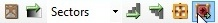. When enabled, all things inside of selected sectors will be dragged when dragging sectors. Otherwise, selected things will be dragged.
Sector Tag and Effect can now be shown on top of sectors. You can use "View Tags and Effects" button to toggle this overlay.
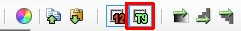
[UDMF] Create Brightness Gradient option can work in 5 modes:
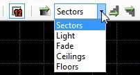
Sector Info panel shows the number of sector's sidedefs as well as light and fade colors (UDMF only):
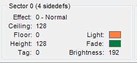
"Flip Linedefs" action is now available from Sectors mode. It will try to align linedefs, so their front (or back) point towards the same sector.
Linedefs mode:
[UDMF] New actions: "Align Ceiling Texture to Back Side", "Align Ceiling Texture to Front Side", "Align Floor Texture to Back Side" and "Align Floor Texture to Front Side" (available in Linedefs -> Align Textures menu).
[UDMF] "Make brightness gradient" command is available in Linedefs mode.
[UDMF] Linedef info panel: relative UDMF light values are shown like this: 16 (128), which means "UDMF light value" ("total surface brightness"). Total surface brightness is UDMF light value + sector brightness.
Split Linedefs preview (a rectangle, colored using Info line color) is shown in this mode.
"Flip Linedefs" action will try to align linedefs, so their front (or back) point towards the same sector.
Things mode:
Several thing types can now be selected at once in Thing Edit form. If you do so, a type randomly chosen from selected ones will be assigned to each selected thing. More info.
You can filter selected things by type using Filter Things form (Things -> Filter Things...).
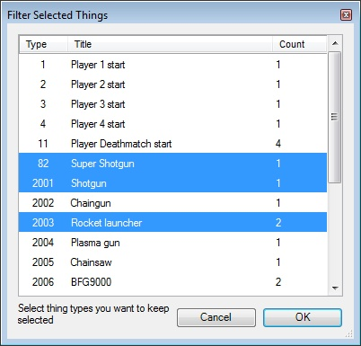
You can clone selected/highlighted things by holding "Shift" before starting to drag them.
New action: "Select Things in Selected Sectors" (Default key is Shift+T).
New action: "Align Things To Linedef".
Z-height of a thing can be changed in absolute and relative mode in Thing Edit form.
Thing's X and Y position can be edited in Edit Thing form.
Vertices mode:
[UDMF] Vertical offsets of a vertex can be edited in Vertex Edit form and are shown in Vertex Info panel.
Split Linedefs preview (a rectangle, colored using Info line color) is shown in this mode.
GZDB Visual mode:
GZDB Visual mode is the result of merging Doom Builder's Visual mode and GZDoom Visual mode.
New rendering features available in this mode:
Dynamic lights (all types) are rendered in Visual mode. You can use Rendering panel to toggle dynamic lights rendering and animation.
Dynamic lights defined in GLDEFS are rendered in Visual mode (only one GLDEFS light per actor is currently supported).
Fog rendering in Visual mode (including colored fog in maps in UDMF format).
New action: "Render selected/all models".
New action: "Toggle dynamic lights animation".
New action: "Toggle dynamic lights rendering".
New action: "Toggle fog rendering".
New action: "Toggle models rendering".
New action: "Toggle GZDoom effects".
Event lines for PatrolPoints, cameras and InterpolationPoints.
Translucent 3D floors are rendered correctly.
Things with zero Height and Radius are rendered.
Plane Copy effect (118) is supported.
Several new 3D floor flags are supported:
"16: Use a sidedef's upper texture to draw the sides".
"32: Use a sidedef's lower texture to draw the sides".
"64: Render the 3D floor using additive translucency".
"Ignore bottom height".
When the thing category has sprite, and the thing doesn't, category sprite is used.
Doom-style shading on walls (walls going from west to east are slightly darker than walls going from north to south). This effect is affected by "vertwallshade", "horizwallshade", "evenlighting" and "smoothlighting" MAPINFO properties.
New editing features available in this mode:
You can Shift-Select (usually Select action = LMB) to select all adjacent surfaces with same texture, Ctrl-Select to select all adjacent surfaces with same height. Ctrl-Shift-Select will also work as expected.
[UDMF] Vertex height offsets ("zfloor" and "zceiling") can be edited.
[UDMF] Using "Increase/Decrease brightness" actions (bound to Ctrl+Mouse Wheel by default) on walls and ceilings will change sidedef/ceiling brightness, using them on floors will change sector brightness, using them on 3D floors will change brightness of 3D floor.
You can use "Toggle geometry effects" action (default key is Tab) to toggle GZDoom's geometry effects, such as slopes, 3D floors, transfer brightness effects etc.
You can hold Shift while dragging a texture to lock movement to horizontal axis, and Ctrl to lock it to vertical axis.
You can hold Ctrl-Shift while dragging a texture to snap texture offsets to current grid size.
New action: "Align Textures X and Y" (default key is Ctrl-A).
"Auto-align Textures Y" action takes surface peg type into account. It also applies vertical scale of first (highlighted) surface to the rest of aligned surfaces (UDMF only).
[UDMF] Auto-align textures actions now affect sides of 3D floors.
[UDMF] New action: "Match Brightness": this action makes the brightness of selected surfaces the same as the brightness of highlighted surface.
New actions: "Lower Floor/Ceiling to adjacent sector" and "Raise Floor/Ceiling to adjacent sector" (default keys are PageDown and PageUp). By default, they will find next lower/higher surface in sectors, adjacent to selected ones, and lower/raise selected sectors to this height. If you hold Ctrl, they will lower/raise sectors to lowest/highest sector inside selection. And they will also drop selected things to ground or align them to ceiling.
[UDMF] New actions: "Increase Scale" (Num9), "Decrease Scale" (Num7), "Increase Horizontal Scale" (Num6), "Decrease Horizontal Scale" (Num4), "Increase Vertical Scale" (Num8), "Decrease Vertical Scale" (Num5) actions. These actions can be used to change thing scale and sidedef/floor/ceiling texture scale.
New action: "Toggle slope" (default key is Alt-S). Select or highlight upper/lower walls then call this action to add slopes. Select or highlight floors or ceilings then call this action to remove slopes.
New action: "Look Through Selection" (default key is "Y"). This action places visual camera at the same position as selected/highlighted thing and rotates it to match thing's angle. Special handling is available if targeted thing is AimingCamera, MovingCamera, SecurityCamera or InterpolationPoint.
New actions: "Auto-align Textures to Selection (X)", "Auto-align Textures to Selection (Y)" and "Auto-align Textures to Selection (X and Y)".
New actions: "Rotate Clockwise" and "Rotate Counterclockwise", which can be used to rotate things and [UDMF] floor/ceiling textures.
New actions: "Change Pitch Clockwise", "Change Pitch Counterclockwise", "Change Roll Clockwise" and "Change Roll Counterclockwise", which can be used to change pitch and roll of selected or highlighted things.
Things can be moved horizontally using "Move Thing Forward/Backward/Left/Right" actions.
Things can be moved to cursor position using "Move Thing To Cursor Location" (default key is Ctrl + Middle mouse) action.
Things can be inserted at cursor position using "Insert Item" action (default key is Insert).
Selected things can be deleted using "Delete Item" action (default key is Delete).
Selected things can be cut/copied/pasted at cursor position.
[UDMF] Floor/ceiling texture rotation is now taken into account when moving texture offsets with arrow keys.
[UDMF] New action: "Reset Local Texture Offsets (UDMF)". It resets upper/middle/lower texture offsets, scale and brightness of targeted or selected sidedefs, resets texture offsets, rotation, scale and brightness of targeted or selected floors/ceilings and resets scale, pitch and roll of targeted or selected things.
[UDMF] "Reset Texture Offsets" action now resets texture offsets of targeted or selected floors and ceilings and also resets scale of targeted or selected things.
Analysis results can be hidden per result type and individually via results list's context menu.
Map Analysis mode can check the map for unconnected vertices.
Map Analysis mode can check the map for overlapping lines. This will check if 2 lines have the same start and end positions.
Map Analysis mode can check the map for overlapping vertices. This will check if a vertex is on top of a linedef or another vertex.
Map Analysis mode can check the map for invalid sectors (sectors with less than 3 sidedefs or sectors without area).
Map Analysis mode can check the map for unused textures.
Map Analysis mode can check the map for missing flats.
Map Analysis mode can check the map for unknown things (things, which type is not defined in DECORATE or current game configuration).
Map Analysis window now has "Apply to all errors of this type" checkbox.
Analysis results can be saved to a text file or copied to clipboard.
Find and Replace mode:
Find and Replace mode now has "Sector Brightness", "Sector Floor Height", "Sector Ceiling Height", "Linedef Flags", "Thing Flags", "Sidedef Flags" and "Sector Flags" search modes.
"Any Texture or Flat", "Sector Flat" and "Sidedef Texture" search modes now support "*" (match any number of characters) and "?" (match any single character) wildcards.
Find and Replace Mode can find and replace Thing and Linedef Actions with specific arguments. Syntax is "[Action] [arg1] [...]". Script names used by ACS actions can be replaced this way as well (UDMF only).
Misc. features:
Nodes Viewer plugin supports ZNODES in "XNOD", "XGLN", "XGL2" and "XGL3" formats.